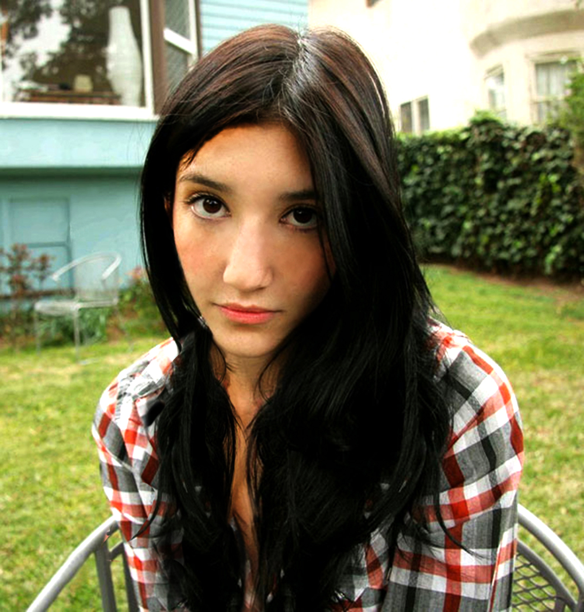

Vježbe nastale na kolegiju:
Vektorska grafika:
- VJEŽBA: izrada vlastitog fonta
Ttf datoteka
Pdf primjer
- VJEŽBA: Bezierova krivulja, precizno crtanje
Ai datoteka
Pdf datoteka
- VJEŽBA: boja i transformacije
Pdf datoteka vježbe s videa
Ai datoteka vlastite vježbe
Pdf datoteka vlastite vježbe
- VJEŽBA: gradijenti i transparencija
Ai datoteka vježbe s videa
Pdf datoteka vježbe s videa
Ai datoteka vlastite datoteke
Pdf datoteka vlastite datoteke
Projektni zadatak 1:

Piksel grafika:
- VJEŽBA: retuširanje

Psd datoteka vježbe s videa

Psd datoteka vlastite vježbe
- VJEŽBA: koloriranje
Psd datoteka vježbe s videa

Psd datoteka vlastite vježbe
- VJEŽBA: fotomontaža

Psd datoteka vježbe
Projektni zadatak 2:
Video i web:
- VJEŽBA: cinemagraf


- VJEŽBA: video obrada
- I 11. VJEŽBA: web stranica
Link na moju prvu web stranicu